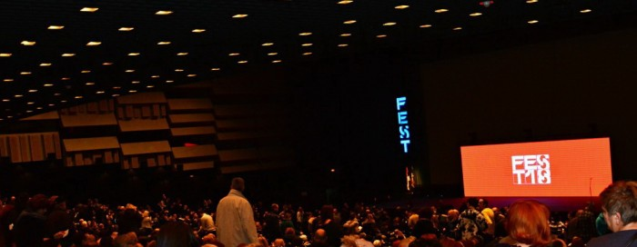

Festival je svečano otpočeo 23. februara projekcijom višestruko nagrađivanog filma "Tri bilborda ispred Ebinga u Misuriju" Martina Mekdone, a završen je 4. marta filmom "Lice" Malgoržate Šumovske
Za nama je 46. FEST i deset uzbudljivih festivalskih dana najveće filmske smotre u Srbiji. Festival je svečano otpočeo 23. februara projekcijom višestruko nagrađivanog filma "Tri bilborda ispred Ebinga u Misuriju" Martina Mekdone, a završen je 4. marta filmom "Lice" Malgoržate Šumovske, ovenčanim Srebrnim medvedom- velikom nagradom žirija.
Tokom deset dana u čak 12 dvorana širom Beograda publika je imala prilike da vidi 116 premijernih ostvarenja svetske kinematografije tokom 418 projekcija. Tu su se našli dobitnici prestižnih nagrada poput "Skvera" Rubena Estlunda, nosioca Zlatne palme, ili "Oblika vode", ovenčanog Zlatnim lavom u Veneciji, holivudski hitovi poput "Ja Tonja", "Advokat" i "Lady bird", filmovi dobro poznatih autora poput Fatiha Akina, Romana Polanskog, Pol Tomas Andersona i Čen Kaigea, ali i neotkriveni biseri evropske i svetske kinematografije. FEST-ova publika imala je prilike da vidi čak 10 ostvarenja nominovanih za Oskara, od čega šest dobitnika- "Oblik vode" osvojio je Oskara za najbolji film, režiju, muziku i scenografiju, "Tri bilborda ispred Ebinga u Misuriju" za najbolju glumicu (Frensis Mekdormand) i sporednog glumca (Sem Rokvel), "Ja Tonja" za najbolju sporednu glumicu (Alison Džejni), "Skrivena ljubav" za najbolji adaptirani scenario, "Fantomska nit" za najbolji kostim, a "Fantastična žena" za najbolji film van engleskog govornog područja.
Festival je ugostio preko 117 gostiju, medju njima i Oskarovca Štefana Ruzovickog, italijanskog reditelja Paola Đenovezea, mađarskog reditelja Kornela Mundruca, makedonskog reditelja Milča Mančevskog, glumicu srpskog porekla Stoju, kao i zvezde iz regiona- Sebastijana Kavacu, Gorana Bogdana, Janka Popovića Volarića, Nevija Marasovića... Legendarni mađarski reditelj Ištvan Sabo primio je nagradu Beogradski pobednik za izuzetan doprinos filmskoj umetnosti, a ista nagrada otišla je i Nedi Arnerić. Ruski reditelj Karen Šahnazarov dobio je Beogradskog pobednika za dosadašnje stvaralaštvo. Tokom festivala održano je 9 pres konferencija sa našim gostima, koji su dali 72 intervjua i gostovali u brojnim emisijama.
U tri takmičarske selekcije prikazano je 19 filmova i u dve festivalske večeri dodeljene su nagrade najboljima. Pet premijernih ostvarenja prikazano je u selekciji Srpski film- "Izgrednici", "Ederlezi rising", "Banditi u potrazi za mamom", "O bubicama i herojima" i "Horizonti". Apsolutnu pobedu u ovoj kategoriji odneo je film "Ederlezi rising" nagrađen za najbolji film, režiju (Lazar Bodroža), glavnu mušku (Sebastijan Kavaca) i žensku ulogu (Stoja). Kosta Ristić osvojio je nagradu žirija za film "Banditi u potrazi za mamom", a Kristijan Garip proglašen je za najboljeg debitanta u istom filmu. Film "Izgrednici" doneo je nagradu za scenario Đorđu Milosavljeviću, kao i specijalnu nagradu za fotografiju Miladinu Čolakoviću.
U selekciji Granice trijumfovao je Rudiger Zuhsland filmom "Hitlerov Holivud", dok je u Glavnom takmičarskom programu pobedu odneo Milad Alami i film "Šarmer", osvojivši nagradu za najbolji film i scenario. Za najbolju režiju nagrađen je Pol Šrejder za film "Iskušenik", najbolji debitant je Natalija Garagjola, film "Sezona lova", najbolja muška uloga Adel Karam u filmu "Uvreda", a ženska ceo ansambl filma "Anđeli nose belo".
Najtraženiji film po oceni publike bio je "Fantomska nit" Pol Tomas Andersona koji je poneo GORKI LIST MOST WANTED MOVIE nagradu.
Za sve one koji nisu stigli da pogledaju svoje favorite, tu je bio i dodatni festivalski dan, FEST na bis odnosno postFESTum koji se održao u šest sala širom grada. Sledeći, 47. FEST nas očekuje od 22. februara do 3. marta 2019. godine.